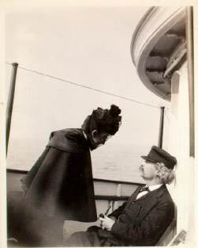
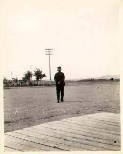
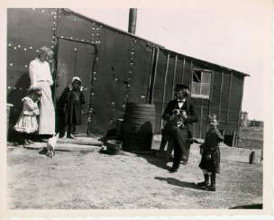
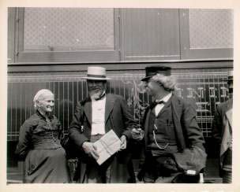
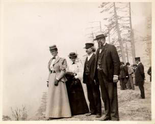
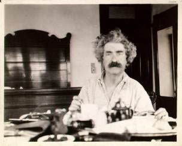
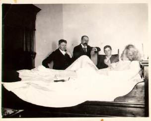
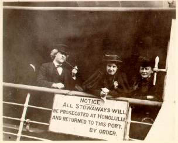

Major Pond's Tour PhotosMajor and Mrs. Pond accompanied MT, his wife and his daughter Clara on the North American segment of MT's world tour. In the Barrett Collection is a 100-year old Kodak film envelope with 32 photographs taken by Pond along the way, with captions on the backs that seem to be by the Major himself. Here, in chronological order, are 8 of them, with those captions. (Pond also kept a journal of the trip. The links within the captions are to the relevant entries in that journal. By reading them, for example, you learn that the walk MT took at Great Falls was the first time on the trip he had felt well enough to venture into the local countryside.) |
|  "Mrs. Clemens urges Mark to put on his overcoat. S.S. Northland. July 18. 1895" |
 "Mark Twain starts for a walk from R.R. Station Great Falls, July 31, 1895" |
|  "Norwegian Shanty Town. Great Falls, Mont. July 3 1895 'They bring Mark the kittens. He fails to persuade her to part with them. The child's mother & the kitten's mother decide not to be seperated." |
 "Mrs. Henry Ward Beecher, U.S. Senator Sanders & Mark take a constitutional while the train is waiting. Mark said something funny & the camera caught. Helena, Mont. Aug. 5, 1895" |
|  "Mark, Major Pond, Clara Clemens, Mrs. Pond. on switchback of Great Northern R.R. west of Spokane . . precipice 1200 feet deep. Aug. 8/9. 1895" |
 "Mark having breakfast in Olympia Wash Aug 11 -- 1895" |
|  "Mark Twain being interviewed by Vancouver, B.C. reporters Hotel Vancouver, Aug. 18 1895" |
 "Mark Twain. Farewell to America. The Clemens Family sails for Australia on S.S. Warrimoo Victoria B.C. Aug. 23 1895" |